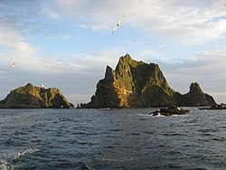

정부는 28일 일본이 올해 방위백서를 통해 또 다시 독도 영유권 주장한 것과 관련 주한일본대사관 총괄공사대리를 초치해 항의했다.
외교부는 대변인 논평에서 "일본 정부가 이날 발표한 방위백서를 통해 역사적·지리적·국제법적으로 명백한 우리 고유의 영토인 독도에 대한 부당한 영유권 주장을 되풀이한 데 대해 강력히 항의한다"며 이같이 밝혔다.
그러면서 "일본 정부는 독도에 대한 부당한 주장을 반복하는 것이 미래지향적 한일 관계 구축에 어떠한 도움도 되지 않는다는 점을 분명히 자각해야 할 것"이라고 강조했다.
또 "정부는 일본 정부의 부당한 주장이 대한민국 고유 영토인 독도에 대한 우리 주권에 어떠한 영향도 미치지 못한다는 것을 재차 분명히 한다"며 "독도에 대한 일본의 어떠한 도발에 대해서도 단호히 대응해 나갈 것"이라고 말했다.
서민정 외교부 아시아태평양국장은 이날 오전 서울 종로구 외교부 청사로 야마모토 몬도 주한 일본대사관 총괄공사대리(정무공사)를 초치해 항의했다.
현재 주한 일본대사관 총괄공사가 한국에 부재중이어서 정무공사를 총괄공사대리 자격으로 부른 것으로 전해졌다.
일본 정부는 앞서 이날 기시다 후미오 총리 주재로 열린 각의(국무회의)에서 2023년도 방위백서를 채택했다.
일본은 올해 백서에서도 "우리나라(일본) 고유 영토인 북방영토(쿠릴 4개 섬의 일본식 표현)와 다케시마(竹島·일본이 주장하는 독도의 명칭) 영토 문제가 여전히 미해결 상태로 존재한다"고 언급해 19년째 독도 영유권에 대한 억지 주장을 반복했다.
주해

독도(獨島)는 동해의 남서부, 울릉도와 오키 제도 사이에 위치한 동도와 서도를 포함해 총 91개의 크고 작은 섬들로 이루어져 있는 대한민국의 암초이다. 울릉도에서 뱃길로 200리 정도 떨어져 있다.[1] 서양권에서는 1849년에 독도를 발견한 프랑스 선박인 '리앙쿠르 호'의 이름을 따서 리앙쿠르 암초(프랑스어: Rochers Liancourt, 영어: Liancourt Rocks)라고 부른다.
현재 대한민국이 실효지배하고 있으나 일본국 정부에서는 다케시마(일본어: 竹たけ島しま 다케시마, 죽도)라는 명칭으로 영유권을 주장하고 있다.
최종덕이 1965년 3월부터 최초 거주한 이래로 김성도 부부 및 독도경비대원 35명, 등대 관리원 2명, 울릉군청 독도관리 사무소 직원 2명 등 약 40명이 거주하고 있다.[3] 또한, 2005년 동도에 대한 입도 신고제 도입 이후 2021년 4월 기준 약 200만 명이 방문하였고, 1일 평균 500명이 입도하고 있다.